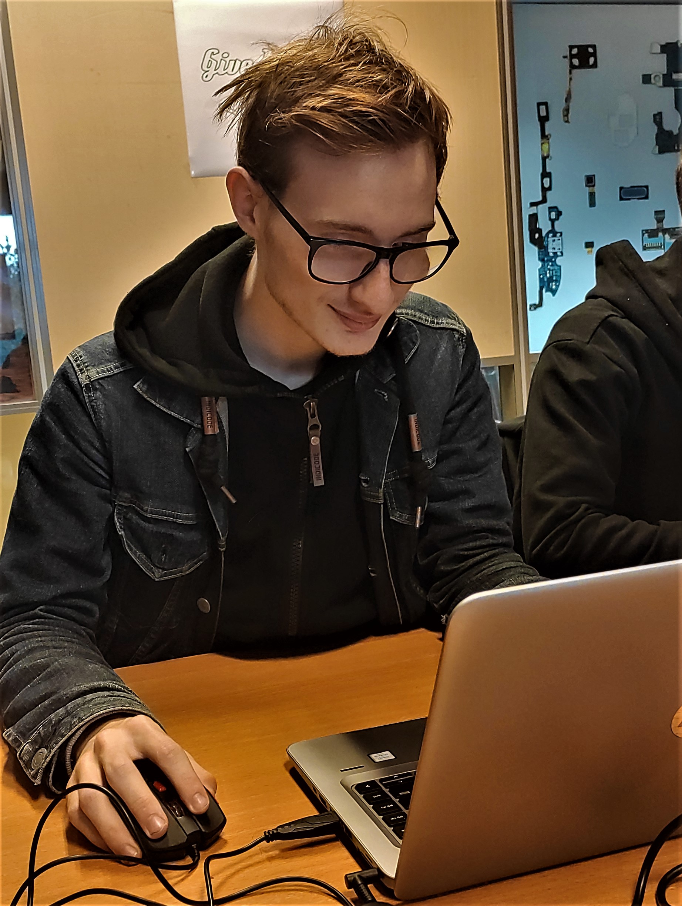

About me
februari 2022
Ik praat niet vaak over mijzelf dus dit voelt raar. Ik ben Mats 19 jaar. Ik speel veel games en spreek veel met mensen online. Maar met mensen in het echt avspreken vind ik moeilijker tot dat ik er daat werkelijk ben dan vind ik het meestal leuk. Ik heb moeite met teveel social interactie ik word er snel moe van
